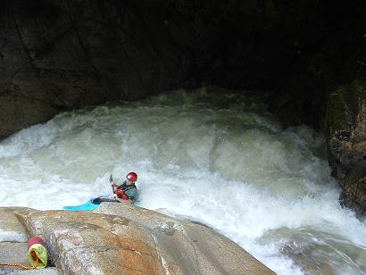

‘La indecisión es la llave a la flexibilidad’
|
||
‘La indecisión es la llave a la flexibilidad’
|
|
********************************************************************************************* Newer news can be found on scotlandnews |
| Taxis in Quito. | ********************************************************************************************* Do you think the Gardai would let you drive around Dame Street in a taxi like this? I don't believe that they would.
|
| Bus surfin' in Tena, Ecuador. | ********************************************************************************************* Mr. Fred went to the Rio Napo festival rodeo with one guy in a bad shirt and two Dutch guys. Inspired by what they saw there, they surfed the bus all the way home.
Sometimes you unintentionally surf the bus home if you are not quick enough to tie your boats down on the roof. If you don't get your kicks on the river you can always try tying down a bunch of boats while the bus careens down the hillside. You have to duck the low-lying cables as you go. |
| Jam and Ross, January 2005. | ********************************************************************************************* Limerick's finest, Jam and Ross, unexpectedly appeared in Ecuador. You can't go anywhere.
|
| Random Orange Dougie, Rio Quijos, Ecuador, January 2005. | ********************************************************************************************* Team Scotland's magician, Dougie, seen here sporting an intensely orange cag. No fear of losing him on the river.
|
| Rio Quijos, Chaco Bridge, January 25, 2005. | ********************************************************************************************* Combined Team Scotland and Scotland '04+1 ran the Chaco and Bombon sections of the Rio Quijos in fine water. We had been expecting more of the low-volume rock scrape that the other sections of the river had been, but it was in fine water and with a big-volume feel. Plenty of play waves, big crashing holes. Jim fell into the biggest hole he's ever fallen into and had a personal rodeo. It was a deep hole, and after pulling off such moves as the McTrash, the 360 powerflip, and the Human Pretzel, the river relented and allowed him out. Everyone else had a pleasant day, with moderate-to-severe beatings handed out randomly. The two gorges on this run were curiously flat calm.
Having exhausted the possibilities in Baeza, we caught the bus back to Quito.
|
| Upper Jondachi, Tena, Ecuador, January 19, 2005. | ********************************************************************************************* Along with a delegation from Team Scotland (the Scottish one), we ran the Upper Jondachi. This was a long, technical boulder run through some great jungle setting. Certain persons from Team Scotland (the Scottish one) and Scotland '04+1 (the Irish one) chose to spend the day near toilets instead. There has been a lot of that going on lately. Here's Jim boofing past a boily cave.  Here's Neil of Team Scotland. Lots of I:3s on the water today, which makes a pleasant change from sharing the river with creekboaters.
|
| Lower Mishaullai, Tena, Ecuador, January 16, 2005. | ********************************************************************************************* We set off in a pair of taxis - taxis around here tend to be double-cab pickups, so we needed two for the nine members of combined Team Scotland and Scotland '04+1.
The Lower Mishahualli is a classic jungle run - hot and humid, with a volume quickly swelled by a number of tributaries. The river banks are steep, overgrown jungle, with no possibility of climbing out, even if there were a road nearby. Once you are in, you have to paddle or swim out the other end. It's also a long day on the water. At the put-in we were mobbed by local kids swimming in the river. Gringos are a novelty the world over.
The toughest aspect of the river is the portage around the nasty main drop. Here we are setting off into the jungle, rather like a trail of leaf-cutter ants.
The walk-around took a hour and a half to climb up the hill, traverse across, and abseil everybody back down. All that to avoid running 50 metres of the river. Here's Jo on the abseil:
At the take-out, the police truck gave us all a ride back to town. Police trucks, police helicopters - we're not fussy.
|
| Off-river entertainment, Tena, Ecuador, January 15, 2005. | ********************************************************************************************* Sometimes we go to the bar after the river to drink a beer or two, compare insect bites, and 'plan' for the morning.
...sometimes, when we leave the bar, we go rafting.
|
| Randon Orange Ecuadorian tree on the Rio Jatanyacu. | *********************************************************************************************
|
| Tena, Ecuador. | ********************************************************************************************* We went to Tena, one of the main centres of Ecuadorian kayaking, after a few days of tourism, and having purchased a boat for Mr. Fred. Note to kayakers - Iberia Airlines do not take kayaks. The Jatanyacu was our first Ecuadorian river and it was a mellow float. This was just as well, as Mr. Fred hasn't paddled in a year. Here he is, hammering down the treacherous rapids in typical Kevin Street gung-ho style...
...after which we commute home at the end of another long day's grind at the office.
|
| Mitad del Mundo (Centre of the World), outside Quito, Ecuador. | ********************************************************************************************* The ancient tribes around here knew they were on the equator, but Mr. Fred needed to be certain, so conducted his own experiments. At the equator, Mr. Fred verifies the Coriolis effect for us - that the water drains directly down, in the southern hemisphere it drains clockwise, and in the northern hemisphere it drains anticlockwise. Donnie was concerned about this issue; we are happy to clarify this and any other scientific queries you may have.
|
| Quito, Ecuador, January 2005. | ********************************************************************************************* Quito city is the second highest capital in the world, and it gets a little chilly in the evenings. That's just more of the hardship we are suffering on your behalf. We are undergoing the torment of having to wear a light fleece in the nighttime, just so you can goof off at work and browse this webpage. Is it any wonder the Quito cops are unimpressed?
|
| Arrival in Ecuador, January 9, 2005. | *********************************************************************************************
Scotland 04+1 arrives in Quito, Ecuador, and three hours later our new team member arrives also. Mr. Fred will join the team from here to Chile. Here we are at the equator, which is a short bus ride north of town. From east to west: Fergal 'Officer' Mahoney, Simon 'Big Water' Barry, The Real Jim Kennedy, and Mr. Fred.
Introducing Mr. Fred: You might think that the headdress and dart blowpipe are native Ecuadorian items that he is wearing at the equator museum, but no, that's just the way they dress in Bray.
|